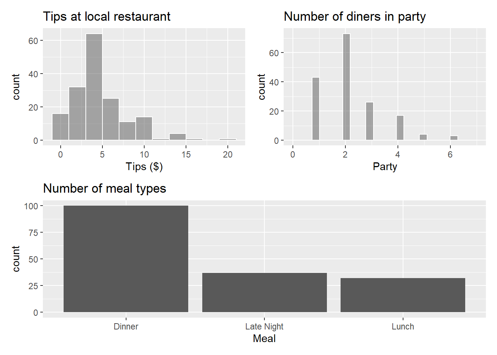
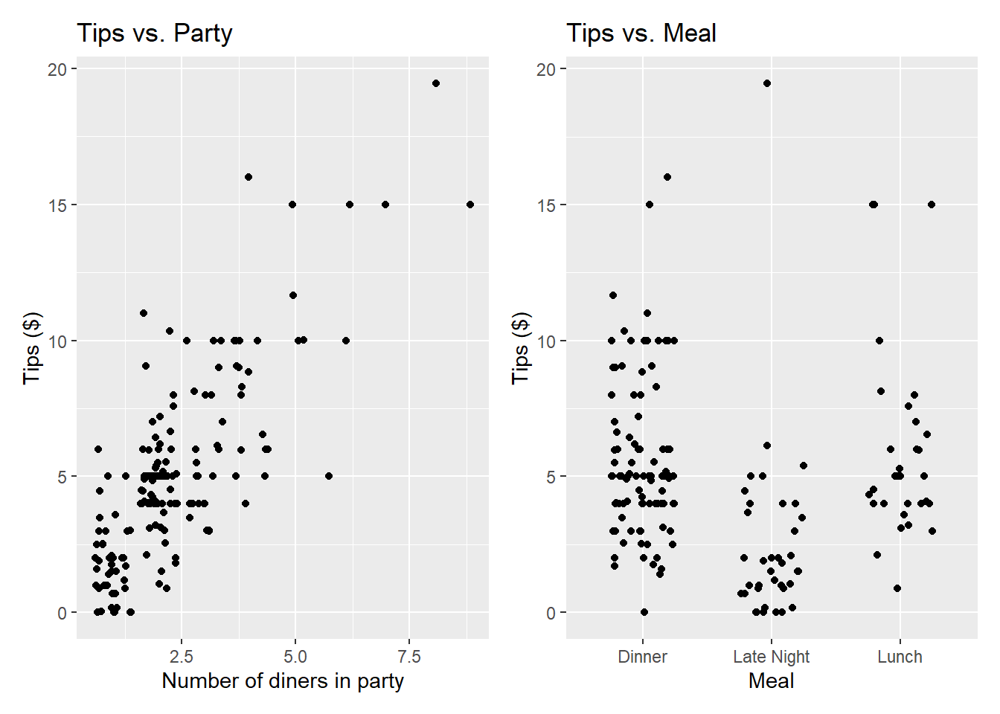

library(tidyverse)
library(broom)
library(yardstick)
library(ggformula)
library(knitr)
library(infer)
library(patchwork)Exam 01 Review/Practice
Important
Note that you are not required to turn anything in for this assignment and you should complete this on a sheet of paper.
Packages
Restaurant tips
What factors are associated with the amount customers tip at a restaurant? To answer this question, we will use data collected in 2011 by a student at St. Olaf who worked at a local restaurant.1
The variables we’ll focus on for this analysis are
Tip: amount of the tipMeal: which meal this was (Lunch,Late Lunch,Dinner)Party: number of people in the party
View the data set to see the remaining variables.
tips <- read_csv("data/tip-data.csv")
glimpse(tips)Rows: 169
Columns: 13
$ Day <chr> "Saturday", "Saturday", "Tuesday", "Tuesday", "Tuesda…
$ Meal <chr> "Dinner", "Dinner", "Dinner", "Dinner", "Dinner", "Di…
$ Payment <chr> "Credit", "Credit", "Credit", "Credit", "Cash", "Cred…
$ Party <dbl> 1, 1, 1, 3, 2, 2, 4, 3, 2, 1, 2, 2, 1, 1, 1, 1, 1, 2,…
$ Age <chr> "Yadult", "Yadult", "SenCit", "Middle", "SenCit", "Mi…
$ GiftCard <chr> "No", "No", "No", "No", "No", "No", "No", "No", "No",…
$ Comps <chr> "No", "No", "No", "No", "No", "No", "No", "Yes", "No"…
$ Alcohol <chr> "No", "No", "No", "No", "No", "No", "No", "No", "No",…
$ Bday <chr> "No", "No", "No", "No", "No", "No", "No", "No", "No",…
$ Bill <dbl> 17.01, 14.23, 20.97, 20.87, 34.66, 25.15, 48.17, 22.6…
$ `W/Tip` <dbl> 20.00, 16.23, 25.97, 24.87, 45.00, 30.00, 53.17, 26.6…
$ Tip <dbl> 2.99, 2.00, 5.00, 4.00, 10.34, 4.85, 5.00, 4.00, 5.00…
$ `Tip Percentage` <dbl> 0.1757790, 0.1405481, 0.2384359, 0.1916627, 0.2983266…Exploratory data analysis
p1 <- tips |>
gf_histogram(~Tip, color = "white", binwidth = 2) |>
gf_labs(x = "Tips ($)",
title = "Tips at local restaurant")
p2 <- tips |>
gf_histogram(~Tip, color = "white") |>
gf_labs(x = "Party",
title = "Number of diners in party") |>
gf_lims(x=c(0, 7))
p3 <- tips |>
gf_bar(~ Meal) |>
gf_labs(x = "Meal",
title = "Number of meal types")
p4 <- tips |>
gf_jitter(Tip ~ Party) |>
gf_labs(x = "Number of diners in party",
y = "Tips ($)",
title = "Tips vs. Party")
p5 <- tips |>
gf_jitter(Tip ~ Meal, height = 0, width = 0.25) |>
gf_labs(x = "Meal",
y = "Tips ($)",
title = "Tips vs. Meal")
(p1 + p2) / p3
(p4 + p5)
The goal is to fit a model that uses the number of diners in the party and the meal to understand variability in the tips. For Exercise 2-8, assume we are only using Party and not Meal to predict Tip.
Exercise 1
- What is another type of plot we could use to look at the relationship between
MealandTips? - Why might we want to use a jitter plot instead of a scatter plot to display the relationship between
PartyandTips?
Exercise 2
Write the statistical model that we will be trying to estimate. Use Greek letters and include an error term.
Exercise 3
The regression output with 90% confidence intervals for the coefficients is shown below.
tips_fit <- lm(Tip ~ Party, data = tips)
tips_fit |>
tidy() |>
kable(digits = 3)| term | estimate | std.error | statistic | p.value |
|---|---|---|---|---|
| (Intercept) | 0.383 | 0.321 | 1.195 | 0.234 |
| Party | 1.957 | 0.118 | 16.553 | 0.000 |
- Write the regression equation and interpret the slope in the context of the data.
- What would your model predict is the
Tipfor a party of size 3? - One family for four walks into your restaurant. Consider the following two predictions and intervals for the
Tipleft by this family. Which one is appropriate for this scenario? If you chose the wider one, explain why it is larger. If you chose the narrower one, explain why it is smaller.
family <- tibble(Party = 4)
predict(tips_fit, newdata = family, interval = "confidence") |> kable(digits = 3)| fit | lwr | upr |
|---|---|---|
| 8.21 | 7.712 | 8.709 |
predict(tips_fit, newdata = family, interval = "prediction") |> kable(digits = 3)| fit | lwr | upr |
|---|---|---|
| 8.21 | 4.068 | 12.353 |
Exercise 4
glance(tips_fit) |> kable(digits = 3)| r.squared | adj.r.squared | sigma | statistic | p.value | df | logLik | AIC | BIC | deviance | df.residual | nobs |
|---|---|---|---|---|---|---|---|---|---|---|---|
| 0.621 | 0.619 | 2.083 | 273.996 | 0 | 1 | -362.794 | 731.588 | 740.978 | 724.472 | 167 | 169 |
What is the regression error for the model. Write the definition of this value in the context of the data.
Exercise 5
tips_aug <- augment(tips_fit)
rsq(tips_aug, truth = Tip, estimate = .fitted) |> kable()| .metric | .estimator | .estimate |
|---|---|---|
| rsq | standard | 0.6213116 |
rmse(tips_aug, truth = Tip, estimate = .fitted) |> kable()| .metric | .estimator | .estimate |
|---|---|---|
| rmse | standard | 2.070463 |
- Define \(R^2\) and interpret it in the context of the data.
- Define RMSE and interpret it in the context of the data.
Exercise 6
The following code can be used to create a bootstrap distribution for the slope (and the intercept, though we’ll focus primarily on the slope in our inference) for the coefficient of Party in our linear model. Use the plot below to (visually) construct a 90% confidence interval for the slope:
- Describe why you chose the values you chose for your interval.
- Interpret the interval in the context of the data.
- How would increasing the number of repetitions change the size of the confidence interval?
- How would increasing the sample size change the size of the confidence interval?
- How would increasing the confidence level change the size of the condidence interval?
set.seed(1234)
boot_dist <- tips |>
specify(Tip ~ Party) |>
generate(reps = 1000, type = "bootstrap") |>
fit()
boot_dist |>
filter(term == "Party") |>
gf_histogram(~estimate)Exercise 7
Set-up a hypothesis test for the slope of Party. Make sure to include:
- Both hypotheses in mathematical notation and words.
- The test statistic.
- The distribution of the test statistic.
- The p-value.
- The result of your test at a significance level of \(\alpha= 0.05\).
You may want to refer to the output in Exercise 3.
Exercise 8
List the conditions necessary for conducting inference. Include how you would test each one and how you would determine if they were satisfied.
Extra credit: Based on the context of this problem, you should expect that the constant variance assumption is likely to be violated… why? Think about how people tip.
Exercise 9
Consider two models:
Model 1
lm(Tip ~ Party + Meal, data = tips) |>
tidy() |>
kable(digits = 3)| term | estimate | std.error | statistic | p.value |
|---|---|---|---|---|
| (Intercept) | 1.142 | 0.341 | 3.345 | 0.001 |
| Party | 1.852 | 0.116 | 15.984 | 0.000 |
| MealLate Night | -1.842 | 0.386 | -4.774 | 0.000 |
| MealLunch | -0.582 | 0.402 | -1.446 | 0.150 |
Model 2
lm(Tip ~ Party + Meal + Party*Meal, data = tips) |>
tidy() |>
kable(digits = 3)| term | estimate | std.error | statistic | p.value |
|---|---|---|---|---|
| (Intercept) | 1.209 | 0.453 | 2.672 | 0.008 |
| Party | 1.824 | 0.169 | 10.795 | 0.000 |
| MealLate Night | -2.136 | 0.682 | -3.133 | 0.002 |
| MealLunch | -0.419 | 0.867 | -0.484 | 0.629 |
| Party:MealLate Night | 0.159 | 0.283 | 0.560 | 0.576 |
| Party:MealLunch | -0.052 | 0.283 | -0.184 | 0.854 |
- For model 1, interpret the slope and p-value of
Partyin the context of the problem. - For model 1, what is the reference level of
Meal. - Which model has the lower RMSE? How do you know that this is true without being able to see it?
- Consider the following two plots of the data. Roughly sketch model 1 on the left and model 2 on the right. You will receive full credit if (a) positive slopes are positive and negative slopes are negative, (b) steeper slopes are steeper, and (c) higher intercepts are higher.
p1 <- tips |>
gf_jitter(Tip ~ Party, color = ~Meal) |>
gf_labs(title = "Sketch model 1")
p2 <- tips |>
gf_jitter(Tip ~ Party, color = ~Meal) |>
gf_labs(title = "Sketch model 2")
p1 + p2 + plot_layout(guides = "collect")Footnotes
Dahlquist, Samantha, and Jin Dong. 2011. “The Effects of Credit Cards on Tipping.” Project for Statistics 212-Statistics for the Sciences, St. Olaf College.↩︎